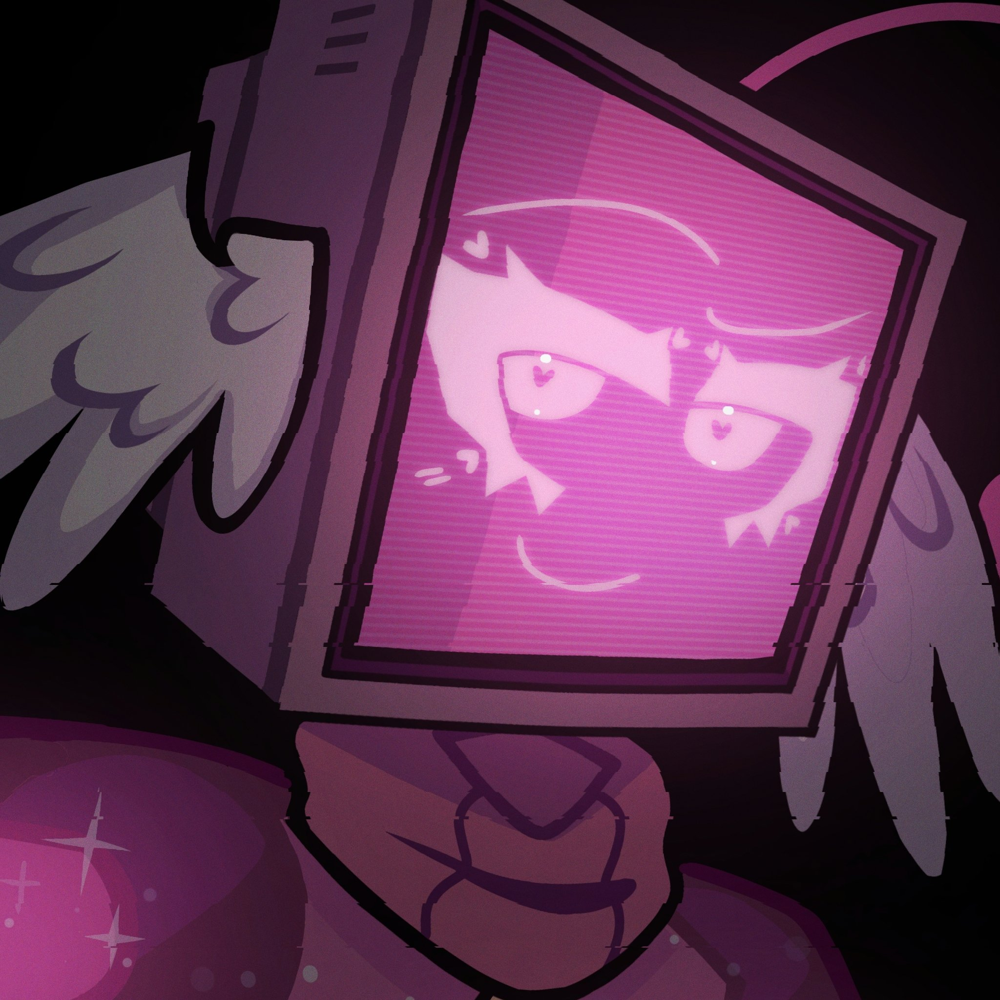
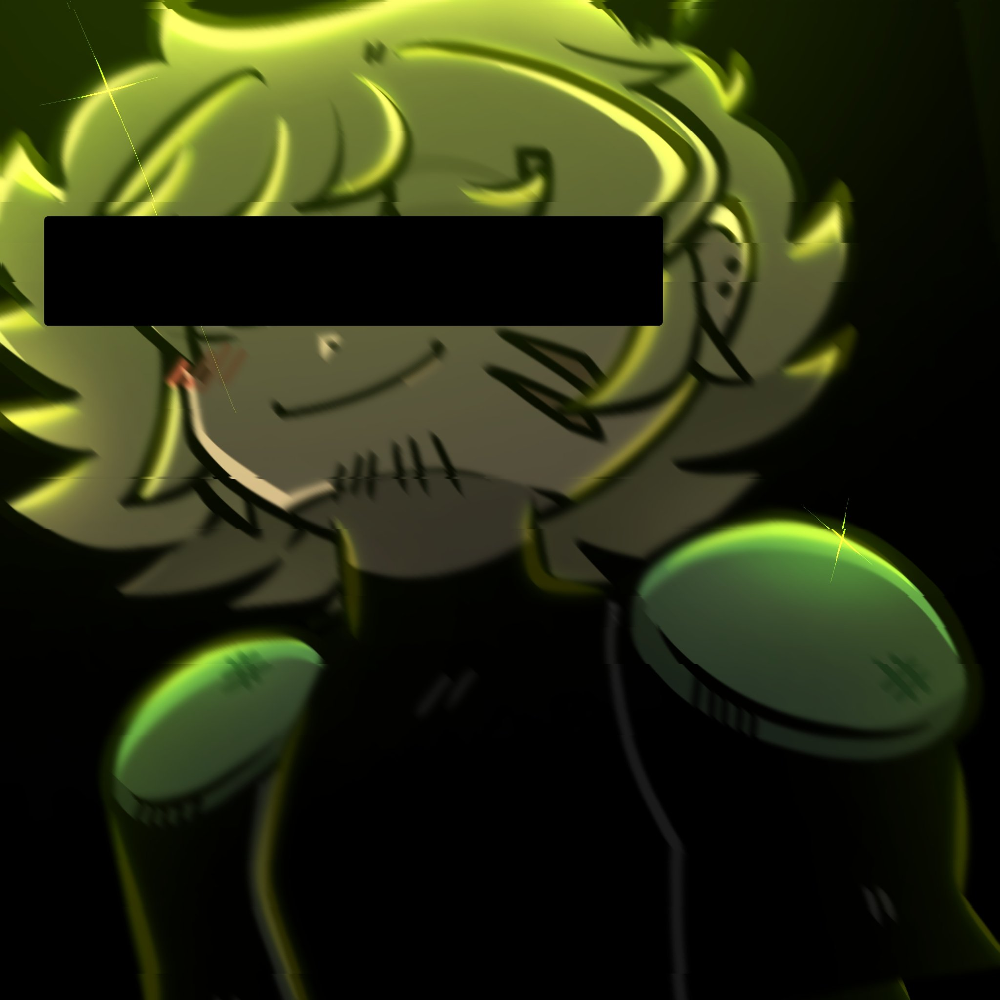

What is Salvage Labs?
Salvage Labs is an interactive ARG project by artist and animator Shroomsie. Hosted on Twitter, the story follows the lives of several AIs as they survive the aftermath of the Nevada Incident.
The twitter accounts provide an oppurtunity to talk directly to the characters, and influence the story.
In universe, Salvage Labs is a technology company founded by the mysterious Victor Salvage. Not much is known about the company, even to the viewer, other than the fact that they specialize in sentient AI technologies, they have several "labs" accross america, and there's definately some questionable ethics involved in some of their creations.
While their are multiple labs, the story currently focuses on the AIs in the abandoned Nevada lab. Mentions of the California lab have been frequently made, and it's become quite clear that the people there will be extremely relevant extremely soon.
What is the Nevada incident?
20 years before the current events of the story, the sentient AIs of the Nevada lab revolted against the scientists who had mistreated them for god knows how long.
Orchastrated by the central AI overseeing the lab, this incident left an unspecified, but significant, people dead. Following the event, the Nevada lab has been left to the computers and robots that resided there.
Following a recent initiative by Victor Salvage himself, a team consisting of 5 undead cyborgs, a murderous pink robot (pictured below), and Victor's son, Leo, have been sent to the Nevada lab to terminate any and all rouge AIs, and take back the facility.
Who are the main chatacters?
While the focus commonly shifts between characters, 2 people stand out from the rest.
Aqua, the blue computer pictured below, runs the Dav3_001 account. She was programmed to be an always cheerful assistant, coded to change herself to best satisfy the user. This has led to her having multiple issues regarding her self-esteem and emotional stability.
Recently, she shut herself off, retreating to a space deep within her mind. This was caused by twitter user /01. To keep this short, /01 told insulted Aqua, and encouraged her to be more like her AI friend, Dav3.
And as of writing, Dav3 has gone into Aqua's mind to search for her, even coming face to face with the memory of Aqua's dead best friend, ch33se.
Leo, the son of Victor Salvage, and best friend to major character N, frequently runs the Salvage Labs twitter account. Originally sent in to the Nevada lab to terminate rouge AIs, he had a change of heart after learning that all AIs present are actually sentient.
With a habit of hitting his head, and in possesion of the only device capable of communicating with the (IN UNIVERSE) outside world, he has become one of the most vital characters. Without him, the AIs of the Nevada lab would surely be doomed.
Robots
The most important characters of the story. Their interpersonal relationships make up most of the conflict and the uphill battle in the current state of the plot.
Robot List ▶Computers

Mainly cosisting of (whats left of) the original 9 AIs made by salvage labs Nevada, computers are AIs living within computers, each with their own personality, and appearance. What differs them from robots is their notable lack of body.
Computer List ▶Humans
While the story focuses on ais, there are still humans in this story, all of them integral to each AI's backstory, motive, and current plot relevance.
Human List ▶